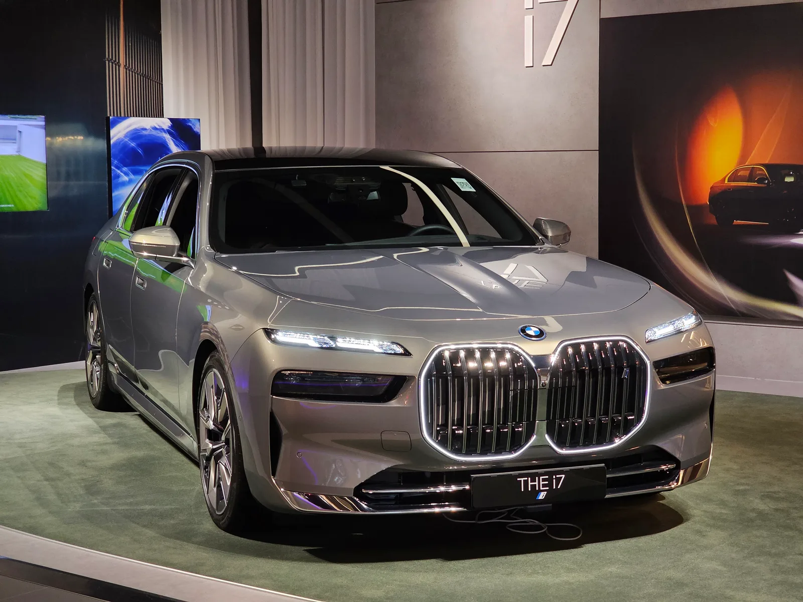
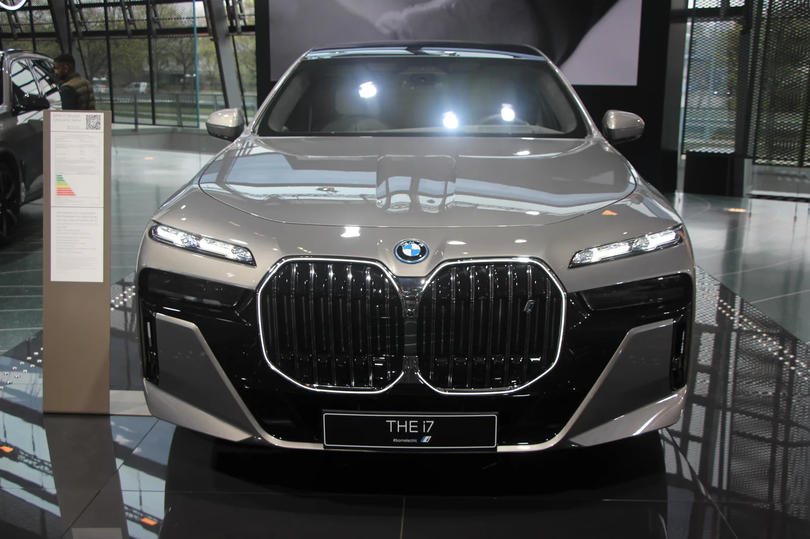
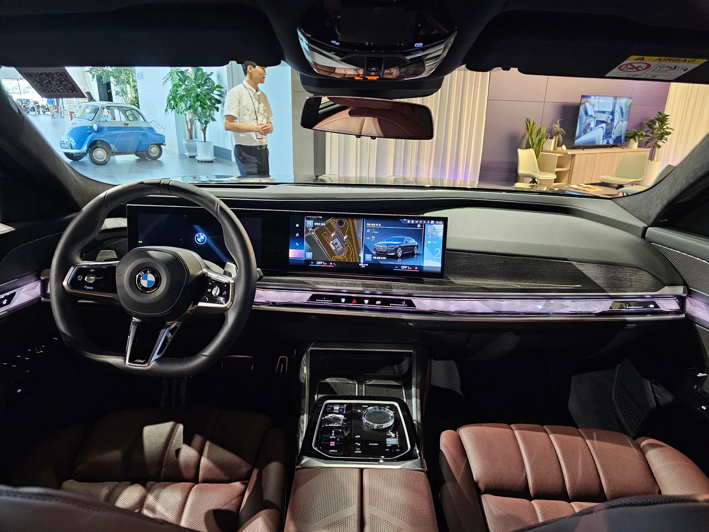
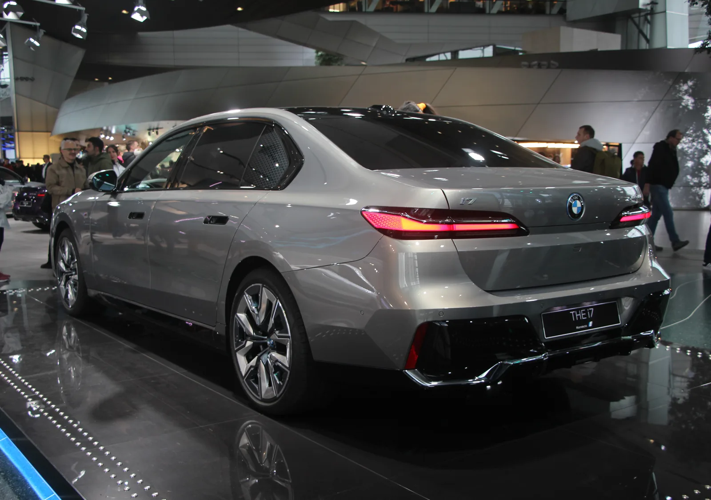

▲ BMW 월드에 전시된 i7 현행(페이스리프트 이전) 모델. 대형 키드니 그릴과 크롬 프레임이 플래그십다운 존재감을 드러낸다. 이번 페이스리프트에서는 이 그릴이 오히려 슬림해지는 방향으로 바뀐다
1. 7년 만에 새 얼굴을 갖춘 플래그십
BMW가 7세대 7시리즈(코드명 G70)의 부분변경 모델 '더 뉴 7시리즈'를 공개했다. 2022년 완전변경 이후 처음 이뤄지는 대규모 손질로, 외관부터 실내 인포테인먼트까지 폭넓게 개선됐다. BMW코리아 역시 순차적으로 이 모델을 들여올 것으로 예상되며, 글로벌 기준 출고는 2026년 7월부터 시작된다.
이번 페이스리프트는 가솔린·디젤 마일드 하이브리드 모델은 물론, 플러그인하이브리드(PHEV), 그리고 순수전기 모델인 i7까지 전 라인업에 동시 적용된다는 점이 특징이다.

▲ 현재 판매 중인 i7(현행·페이스리프트 이전 모델)의 정면부. 대형 키드니 그릴과 좌우로 이어지는 슬림한 헤드램프가 특징이다. 페이스리프트 모델에서는 이 구성이 '슬림해진 그릴 + 더 작아진 헤드램프'로 재편된다 ⓒ Wikimedia Commons
2. 오히려 슬림해진 키드니 그릴, 눈에 띄게 작아진 헤드램프
공개 전 스파이샷 단계에서는 "그릴이 더 커졌다"는 관측도 나왔지만, 4월 22일 베이징모터쇼에서 공개된 실제 양산형은 정반대에 가까웠다. BMW 공식 발표에 따르면 새 '키드니 아이코닉 글로우' 그릴은 이전 세대보다 오히려 더 슬림하고 세로 비율이 강조된 형태로 다듬어졌으며, 그릴 안쪽 슬랫 방향도 세로형에서 가로형으로 바뀌었다. 헤드램프는 이보다 더 극적으로 변했다. 광원을 하나로 통합해 크기를 큰 폭으로 줄였고, 위치도 차체 바깥쪽 에어커튼 부근으로 옮겨 그릴과 시각적으로 다시 이어지도록 배치했다. 그 결과 정면에서 보면 헤드램프가 눈에 잘 띄지 않을 정도로 존재감이 옅어졌다는 평가가 많다. 전동화 모델인 i7에는 그릴 안쪽에 발광 기능이 더해져 순수전기 모델임을 강조하는 디자인 요소로 활용된다.
📍 참고로 알아두면 좋은 것
키드니 그릴은 BMW 고유의 트윈 그릴 디자인 요소다. 그동안 BMW가 최신 모델일수록 그릴을 더 키워온 흐름과 달리, 이번 7시리즈 페이스리프트는 '노이어 클라쎄' 디자인 언어를 선반영하며 그릴을 슬림화하고 대신 헤드램프를 극도로 축소하는, 정반대 접근을 택했다는 점이 특징이다.
3. 파노라믹 iDrive와 8K 시어터 스크린
실내에서는 BMW 파노라믹 iDrive를 비롯해 신규 동반석 디스플레이, 8K 해상도의 2열 시어터 스크린이 새롭게 탑재된다. 클린 디자인 언어를 강조해 소재의 고급감과 모던함을 동시에 살렸다는 것이 BMW 측 설명이다. 운전자 보조 기능도 강화돼 레벨2 수준의 주행 보조와 AI 기반 주차공간 탐지, 자동주차 기능이 포함됐으며, 미국 시장부터는 아마존 알렉사 기반 음성인식도 지원된다.

▲ 현행 7시리즈 실내. 운전석 계기판부터 중앙 디스플레이까지 이어지는 파노라믹 형태의 스크린이 이미 적용돼 있으며, 페이스리프트 모델은 여기에 신규 동반석 디스플레이와 8K 2열 시어터 스크린을 더한다 ⓒ Wikimedia Commons
4. 파워트레인 — 새 엔진과 더 길어진 i7 주행거리
내연기관 라인업은 기존 B58 엔진 대신 개선된 B58TÜ3 엔진으로 교체된다. 740i는 최고출력 400마력, 최대토크 55.3kgf·m를 발휘하며, 신규 트림인 735i는 최고출력 286마력으로 라인업 진입 모델 역할을 맡는다. 순수전기 모델 i7은 새로 개발된 112.5kWh 원통형(6세대 eDrive) 배터리를 얹은 50 xDrive, 60 xDrive, 고성능 M70 xDrive 트림으로 구성된다. WLTP 기준 주행거리는 i7 50 xDrive가 최대 708km, 60 xDrive가 707km, M70 xDrive가 650km이며, DC 급속충전 속도도 기존 195kW에서 최대 250kW로 높아졌다.
| 트림 | 파워트레인 | 최고출력 | WLTP 주행거리 |
|---|---|---|---|
| 735i | 가솔린 마일드 하이브리드 | 286마력 | - |
| 740i | 가솔린 마일드 하이브리드(B58TÜ3) | 400마력 | - |
| i7 xDrive50 | 순수전기 | 455마력 | 708km |
| i7 xDrive60 | 순수전기 | 544마력 | 707km |
| i7 M70 xDrive | 순수전기 고성능 | 680마력 | 650km |
5. 국내 출시 전망
BMW코리아의 페이스리프트 모델 국내 출시 일정은 이 글을 쓰는 시점(2026년 9월)까지도 공식화되지 않았다. 다만 BMW그룹코리아는 2026년 부산모빌리티쇼에서 "2027년까지 약 40개 모델에 노이어 클라쎄 핵심 기술을 적용하겠다"고 밝혔고, 노이어 클라쎄 기반 첫 양산차인 더 뉴 iX3의 국내 고객 인도도 임박한 상태다. 이런 흐름을 고려하면 노이어 클라쎄 기술을 앞당겨 반영한 이번 7시리즈·i7 페이스리프트 역시 연내 또는 2027년 상반기 중 국내 상륙이 유력하게 점쳐진다. 참고로 BMW코리아는 2026년 7월 페이스리프트 이전 모델을 기반으로 한 블랙 스페셜 에디션 '740i xDrive M 스포츠 프로'(1억 8,100만원)를 별도로 출시한 바 있는데, 이는 이번 페이스리프트 모델과는 다른 차량이므로 혼동하지 않아야 한다. 기존 7시리즈·i7이 국내 대형 세단 시장에서 벤츠 S클래스, EQS와 경쟁해온 만큼, 이번 페이스리프트 역시 같은 구도에서 판매 경쟁을 이어갈 전망이다.
✅ 더 뉴 7시리즈·i7, 이것만은 확인하세요
· 글로벌 생산은 2026년 7월부터 시작, 베이징모터쇼에서 4월 22일 공식 공개
· 외관은 키드니 그릴 슬림화·세로 비율 강조, 헤드램프는 큰 폭으로 축소돼 차체 바깥쪽으로 이동
· 실내는 파노라믹 iDrive, 8K 2열 시어터 스크린 신규 적용
· i7은 112.5kWh 배터리로 WLTP 기준 최대 708km(50 xDrive)까지 주행거리 확대, 급속충전 최대 250kW
· 국내 출시 일정은 미공개, 연내~2027년 상반기 상륙 가능성 거론(2026년 7월 출시된 '740i M스포츠 프로' 블랙 에디션은 페이스리프트 이전 모델)

▲ 현행 i7 후측면. 얇고 가로로 이어지는 리어 콤비네이션 램프와 'i7' 레터링이 적용됐다. 페이스리프트 모델은 노이어 클라쎄풍의 더 넓은 LED 테일램프와 새 범퍼 디자인을 갖춘다 ⓒ Wikimedia Commons
6. 정리
더 뉴 7시리즈는 예상과 달리 키드니 그릴을 슬림화하고 헤드램프를 큰 폭으로 축소하는 방식으로 8년 만에 플래그십 세단의 얼굴을 새로 그렸다. 순수전기 i7도 112.5kWh 신형 배터리로 최대 708km까지 주행거리가 늘었고, 새로운 B58TÜ3 엔진을 단 내연기관 모델도 라인업에 합류했다. 글로벌 생산은 2026년 7월부터 시작됐으며, 국내 출시 시점은 아직 공식화되지 않아 앞으로의 발표를 지켜볼 필요가 있다.